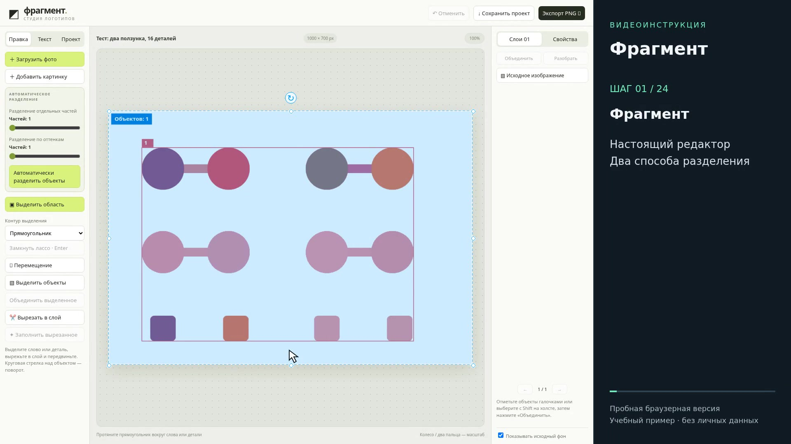

Как пользоваться редактором
Настоящий интерфейс пробной браузерной версии. Разделение отдельных частей и по оттенкам, работа с объектами, текстом и сохранение результата. Голос: Silero, Ксения. Без музыки.

Нажмите, чтобы смотреть со звукомЧто показано
- Загрузка изображения и счётчик выбранной области.
- Отделение одного объекта от фона.
- Два ползунка: восемь и шестнадцать частей.
- Перемещение, цвет и личная палитра.
- Размер, растяжение и поворот.
- Объединение и разбор группы.
- Повторное разделение области и лассо.
- Шрифты, размер и текст по дуге.
- Добавление картинки и масштаб просмотра.
- Контекстное меню и отмена.
- Экспорт прозрачного изображения.
- Сохранение и повторное открытие проекта.